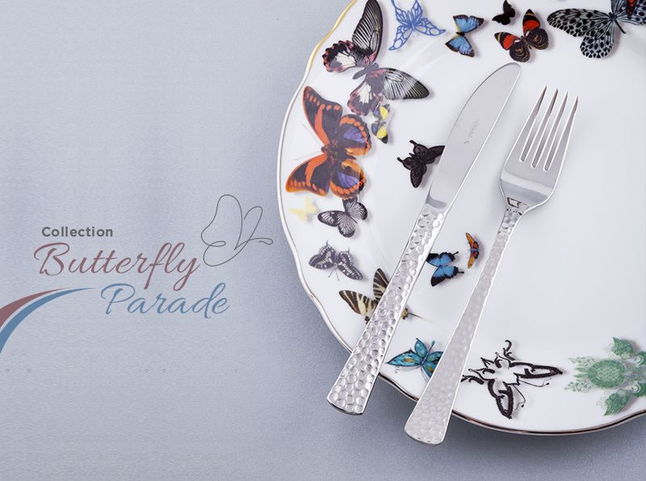
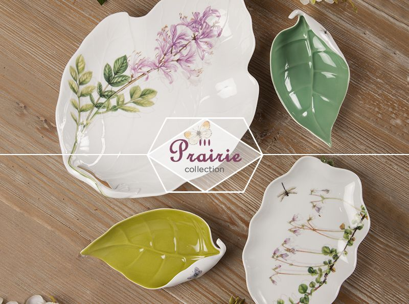
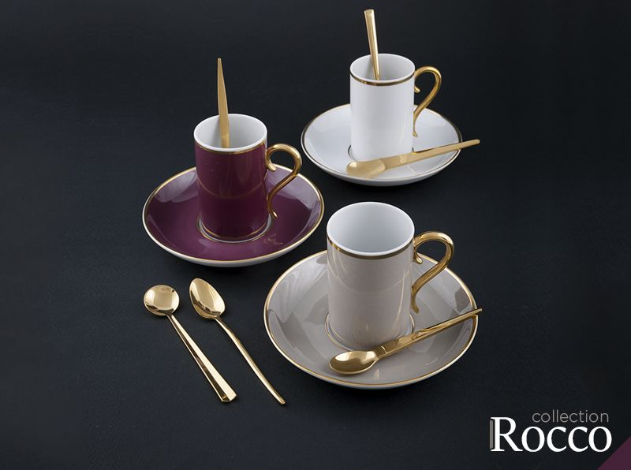
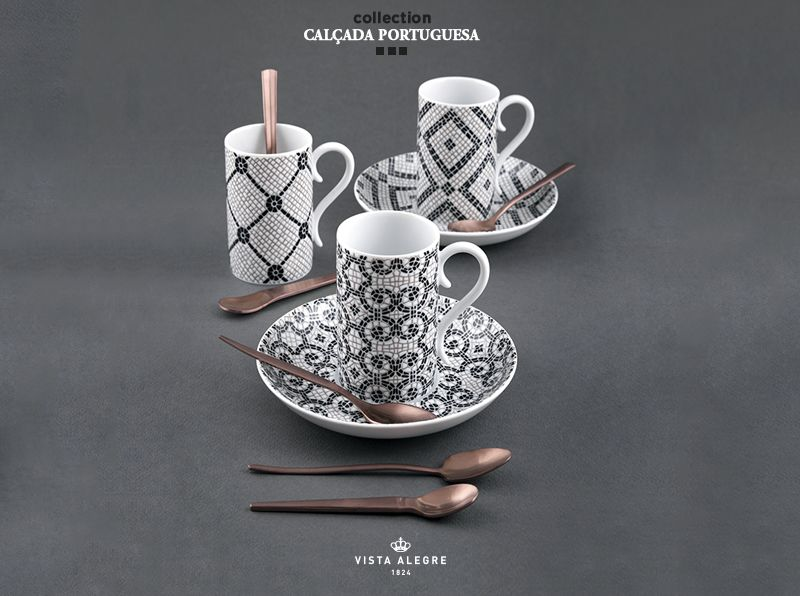

<div class="row">
    <div class="col-sm-12">
        <div class="row">
            <div class="col-xs-12">
                <h2 class="title-blog">TÚ MESA PERFECTA CON LOS ELEMENTOS ADECUADOS.</h2>
                <p class="text-justify">En el momento de servir la mesa, pensamos más en la funcionalidad que en el diseño, ya que en cierto modo
                    no creemos relevante el buen diseño en nuestra vajilla, pero este sector también posee ciertas tendencias
                    y parámetros para mantener una armonía en la mesa.
                    <br>
                    <br>Para comenzar, el diseño de vajillas cada vez se inspira más en elementos de la naturaleza, como hojas,
                    formas, o incluso animales, con detalles que evoquen colores vibrantes, para transmitir la fuerza natural,
                    puede ser pintado o que su forma represente ciertas figuras, esto le dará a tu mesa versatilidad y vida.

                </p>
            </div>
        </div>
        <div class="row">
            <div class="col-sm-6">
                <a href="javascript:void(0)" [routerLink]="['/categoria']" [queryParams]="{ pageSize: '10000', group: '024', collection: 'Butterfly Parade' }">
                    
                </a>
            </div>
            <div class="col-sm-6">
                <a href="javascript:void(0)" [routerLink]="['/categoria']" [queryParams]="{ pageSize: '10000', group: '024', collection: 'Prairie' }">
                    
                </a>
            </div>
        </div>
        <br>
        <div class="row">
            <div class="col-xs-12">
                <p class="text-justify">Si quieres reflejar elegancia en tu mesa para una ocasión especial, los filos dorados, plateados o cobres
                    son una excelente opción, se puede mezclar con colores de temporada, para dar esa fusión de estilo y
                    modernidad en nuestra mesa, buscar un equilibrio adecuado crea una identidad de buen gusto, lo importante
                    es no exagerar.
                    <br>
                    <br>Elegir algunos accesorios como cubiertos o bases en toques dorados o cobre también es otra forma de darle
                    un aire de sofisticación a tu mesa, es elegir un punto focal para tus invitados y seguro hablaran de
                    ese buen detalle.
                    <br>
                    <br>Para aquellos que les gusta la sobriedad también hay estilos específicos en las tendencias para su mesa
                    (vajilla) con el característico color blanco, pero con detalles en relieve para darle movimiento a nuestra
                    mesa y no caer en el error de dejarla plana, otra buena opción son platos con detalles para resaltar
                    su diseño.
                    <br>
                    <br>No debemos olvidar que los pequeños detalles que dan los complementos, son cruciales para integrar todo
                    los elementos, un buen tip es darle a la mesa un “concepto”, es decir crear una historia con la vajilla
                    que pondrás, darle atributos a las piezas, y así podrás plasmar tu personalidad a la hora de una cena
                    especial.
                </p>
            </div>
        </div>
        <div class="row">
            <div class="col-sm-6">
                <a href="javascript:void(0)" [routerLink]="['/categoria']" [queryParams]="{ pageSize: '10000', group: '024', collection: 'Rocco' }">
                    
                </a>
            </div>
            <div class="col-sm-6">
                <a href="javascript:void(0)" [routerLink]="['/categoria']" [queryParams]="{ pageSize: '10000', group: '024', collection: 'Calçada Portuguesa' }">
                    
                </a>
            </div>
        </div>
    </div>
</div>